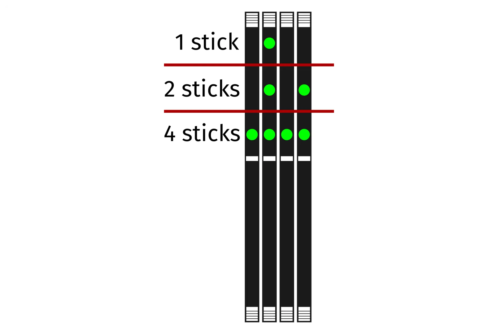

Thelio Mira (Parts & Repairs)
Many components in your Thelio Mira can be upgraded or replaced as necessary. Power the machine off, switch off the power supply, and unplug all peripherals before working with any internal components. Then, follow these step-by-step guides for instructions:
- Removing the top case
- Adding/removing 2.5" storage drives
- Replacing the RAM
- Replacing the bottom case fan
- Replacing a GPU
- Removing the CPU duct
- Replacing the M.2 drives
- Replacing the CPU fans
- Replacing the CPU cooler/thermal paste and CPU
- Replacing the power supply
- Replacing the Thelio-IO board
- Troubleshooting the power button
Removing the top case:
The top case can be removed to access the internal components.
Tools required: Cross-head (Phillips) screwdriver (optional)
Time estimate: 2 minutes
Difficulty: Easy ●
Steps to remove the top case:
- Remove the eight outer screws holding the top case onto the machine.
- Slide the top case up and off of the machine.
Adding/removing 2.5" storage drives:
Thelio Mira b1.0 supports up to four 2.5" SATA III drives.
If the middle and bottom M.2 slots are used with M.2 SATA drives, the motherboard's SATA ports #2 and #6 will become disabled; however, SATA ports #2 and #6 are not used for 2.5" SATA drives in Thelio Mira. If any 2.5" drives are not being detected and M.2 SATA drives are being used, try changing the ports used for the SATA connections between the Thelio-IO board and the motherboard.
Tools required: Cross-head (Phillips) screwdriver (optional)
Time estimate: 10 minutes
Difficulty: Easy ●
Steps to add/remove 2.5" storage drives:
- Follow the steps above to remove the top case.
- Unscrew the two screws securing the drive bay's cover.
- If you are adding a new drive, pop out the black plastic ring on the top crossbar and slide out four screws (per drive).
- Insert four screws into each 2.5" storage drive you wish to install.
- Slide each 2.5" drive into one of the slots leading to the Thelio-IO board.

Replacing the RAM:
Thelio Mira b1.0 supports up to 128GB (4x32GB) of RAM. The RAM sticks are DDR4 DIMMs (non-ECC) running at a speed of 3200MHz. If you've purchased new RAM, need to replace your RAM, or are reseating your RAM, follow these steps.
Tools required: Cross-head (Phillips) screwdriver (optional)
Time estimate: 15 minutes
Difficulty: Medium ●
Steps to replace the RAM:
- Follow the steps above to remove the top case.
- To remove an existing RAM stick, flip the top latch up away from the stick, then pull the stick out of the slot, starting from the top edge. (The bottom of the RAM slot does not move.)

- Make sure the tab on the top of the slot is open (pulled upwards), then insert the new RAM (or re-seat the existing RAM) into the slot.
- The RAM stick will only fit in one direction. The larger group of pins goes on top.
- Use the following guide for placement of the RAM sticks:

- Replace the top case.
Replacing the bottom case fan:
Thelio Mira b1.0 has one case-mounted intake fan on the bottom of the chassis.
Tools required: Cross-head (Phillips) screwdriver
Time estimate: 20 minutes
Difficulty: Medium ●
Steps to replace the bottom case fan:
- Follow the steps above to remove the top case.
- Unplug the fan's cable from the Thelio-IO daughterboard.
- The bottom case fan plugs into the
INTAKE0port on the Thelio-IO board. - When viewed from the front of the case, this connector is second from the top.
- The bottom case fan plugs into the

- Unscrew the four fan screws from the bottom of the machine.
- To avoid damaging other components, place the machine on its front side when working with the bottom surface.

- Remove the old fan from the case.
- When installing the fan, mount the components in the following order:
- Chassis
- Dust filter
- Acrylic spacer
- Fan
- Thread the new fan's cable through the opening in the bottom-front corner of the case and through the velcro connector near the front edge.
Replacing a GPU:
Thelio Mira supports up to two dual-slot GPUs. All PCIe x16 slots run at Gen 4 speeds with 11th Gen processors, or Gen 3 speeds with 10th Gen processors. Mixing NVIDIA and AMD GPUs is not recommended.
Tools required: Cross-head (Phillips) screwdriver
Time estimate: 20 minutes
Difficulty: Medium ●
Steps to replace a GPU:
- Follow the steps above to remove the top case.
- Unscrew the two back screws holding the PCIe bracket in place, then slide the PCIe bracket open.
- Unscrew the four screws holding the side GPU brace in place. Remove the brace.
- If you're removing a GPU, unplug the GPU power cable from the right side of the card. Hold down the latch on the connector while unplugging the cable.
- Hold the latch on the motherboard to free the PCIe connection, then pull the card out of the slot.
- If removing the bottom GPU, it may be necessary to remove the top GPU first in order to reach the latch.
- If space is tight, a long object such as a screwdriver can be used to press the latch.

- When installing new GPUs, the slots should be utilized in the following order:
- Primary GPU: top slot.
- Secondary GPU: second slot from the top.
- After inserting the new GPU into its slot, connect the power cables.
- The maximum number of power cables are preinstalled in your system, but some may be tied back using velcro if the system shipped with less than two GPUs.
- Once all GPUs are installed, replace the side GPU brace, back PCIe bracket, and top case.
- The side GPU brace includes screws to adjust for the height of the graphics cards (highlighted green below) and the depth of the graphics cards (highlighted blue.)

The GPU brace's primary function is to prevent damage during shipping. The system can be run without the brace if it doesn't fit an upgraded card; the back PCIe bracket provides primary support for the GPUs.
Removing the CPU duct:
The CPU duct guides airflow through the CPU cooler. It covers the CPU and partially obstructs the RAM slots and top GPU.
Tools required: Cross-head (Phillips) screwdriver (optional)
Time estimate: 7 minutes
Difficulty: Easy ●
Steps to remove the CPU duct:
- Follow the steps above to remove the top case and remove the GPU brace.
- Unplug the connectors for the CPU fans.
- Unscrew the four back screws holding the CPU duct in place.

- Pull the CPU duct away from the machine.
Replacing the M.2 drives:
Thelio Mira has three M.2 slots. All slots support M.2 sizes 22110, 2280, 2260, and 2242. The following restrictions apply:
- Top M.2 slot:
- Only works with 11th Gen CPUs.
- Supports PCIe NVMe Gen 4 and PCIe NVMe Gen 3.
- Middle M.2 slot:
- Supports PCIe NVMe Gen 3 and SATA III.
- Bottom M.2 slot:
- Supports PCIe NVMe Gen 3 and SATA III.
Tools required: Cross-head (Phillips) screwdriver
Time estimate: 25 minutes
Difficulty: Medium ●
Steps to replace the M.2 drives:
- Follow the steps above to remove the top case and remove the GPU brace and GPUs.
- If you are accessing the top M.2 slot, remove the CPU duct.
- Remove the M.2 heatsink covering the slot you wish to access.
- The heatsink screws are held captive, and will not fully come out of the heatsink.
- It may take some pressure to remove the heatsink and thermal tape from the M.2 drive. After unscrewing the heatsink, pull slowly to avoid breaking the thermal tape.

- Free the retaining mechanism opposite the M.2 slot.
- The top M.2 slot uses a regular Phillips screw.
- The middle and bottom M.2 slots use a plastic locking mechanism.
- To free a drive, twist the plastic ring counter-clockwise until the tab points away from the M.2 slot.
- To secure a drive, twist the plastic ring clockwise until the tab points upwards.
- Remove the existing M.2 drive by pulling it out of the slot.
- If utilizing the top slot for the first time, peel the blue plastic covering off of the gray thermal tape on the motherboard.
- Insert the new M.2 drive into the slot and hold it in place.
- Replace the retainer screw or secure the plastic retaining tab.
- If utilizing any slot for the first time, peel the plastic backing off of the heatsink to expose the double-sided thermal tape for that slot.

- Replace the M.2 heatsinks, CPU duct, GPUs, GPU brace, and top case.
Replacing the CPU fans:
Thelio Mira b1.0 contains two CPU fans. One is mounted on the CPU duct, and one is mounted on the cooler.
Tools required: Cross-head (Phillips) screwdriver
Time estimate: 25 minutes
Difficulty: Medium ●
Steps to replace the duct-mounted CPU fan:
- Follow the steps above to remove the top case, remove the GPU brace, and remove the CPU duct.
- Unscrew the four screws (two on each side) holding the fan brackets onto the duct.
- Removing the brackets from the duct is not required to remove the fan, but it makes installing the fan much easier.
- Unscrew the four screws attaching the two brackets to the fan.

- When reinstalling the fan into the CPU duct, the spinning side should face the CPU cooler and the front of the case, while the side with a stationary cover should face the back of the case.
- Overtightening the fan bracket's screws may cause fan noise; if the fan is creating excessive noise, try slightly loosening some of the screws.
Steps to replace the cooler-mounted CPU fan:
- Follow the steps above to remove the top case, remove the GPU brace and GPUs, and remove the CPU duct.
- Pull the corners of the fan's top clip away from the heatsink it's held to.
- Alternatively, the opposite side of the bracket (clipped onto the heatsink) can be released first.
- Repeat the process for the bottom clip, then pull the fan and clips away from the CPU cooler.
- When reinstalling the CPU cooler fan, the side with a stationary cover should face the CPU cooler and back of the case, while the spinning side should face the front of the case.
Replacing the CPU cooler and CPU:
The CPU cooler dissipates heat from the CPU to the heatsink, where the CPU fans expel it from the system. Depending on your climate and the age of the machine, replacing the thermal paste between the CPU and the cooler/heatsink may help the system run cooler.
The CPU uses an Intel LGA 1200 socket. The CPU cooler is a Noctua NH-U12S.
Tools required: Cross-head (Phillips) screwdriver (long), torx screwdriver, thermal paste
Time estimate: 35 minutes
Difficulty: High ●
Steps to remove the CPU cooler/thermal paste:
- Follow the steps above to remove the top case, remove the GPU brace and GPUs, remove the CPU duct, and remove the cooler-mounted CPU fan.
- While holding the CPU cooler in place so it doesn't fall, unscrew the two screws holding the CPU cooler onto the vertical mounting brackets.
- The cooler will come away from the CPU.
- Using a paper towel, clean the existing thermal paste off of the heatsink and CPU. You may also use a small amount of rubbing alcohol if the old paste is dried or difficult to remove.
Steps to replace the CPU:
- Place the computer on its side so the motherboard is facing up.
- Push the locking pin outward until it's able to spring away from the motherboard.
- Caution: the locking pin may spring up with significant force when freed.
- Flip the CPU holder away from the CPU.

- Carefully lift the CPU out of the CPU socket.
- Be careful not to bend any of the gold pins on the CPU socket, and do not touch the gold pads on the CPU.

- Gently place the new CPU into the socket.
- When reinstalling the CPU, be sure to match the original orientation, with the triangle on the CPU pointing to the bottom left of the motherboard.
- The triangle on the CPU should match the triangle on the top of the CPU cover and the dot on the motherboard.
- Flip the CPU cover back onto the CPU and push the locking pin down into place.
Steps to install the thermal paste/CPU cooler:
- Place a line of thermal paste onto the CPU.
- Place the CPU cooler onto the CPU; while holding it in place, screw each end of the cooler crossbar onto one of the mounting brackets.
- Insert each screw partially first, then fully tighten both.
- Reinstall the cooler-mounted CPU fan, CPU duct, GPU bracket, and top case.
Replacing the power supply:
The power supply unit (PSU) is modular and can be replaced with another unit of the same model. Different models may not be compatible with the cabling pre-installed in the Thelio Mira.
Tools required: Cross-head (Phillips) screwdriver
Time estimate: 20 minutes
Difficulty: Medium ●
Steps to replace the power supply:
- Follow the steps above to remove the top case and remove the GPU brace and bottom GPU.
- Unplug all of the modular cabling from the back of the PSU.
- Some of the cables may be easier to unplug after the PSU has been unscrewed/removed from the case.

- Unscrew and remove the PSU bracket.
- One screw is located on the opposite side of the case.

- Unscrew the four screws holding the PSU in from the back of the case.
- Remove/replace the PSU. Set the replacement PSU on top of the rubber post that holds it at the correct height.
- The replacement PSU should be installed with the fan facing the bottom of the case.
- After screwing in the replacement PSU, use the labels and pin counts on the cables and ports to ensure the power cables are reconnected in the proper locations.
- Remember that not all of the available connectors will plug into the PSU-- four connectors (on two cables) are to be plugged into the GPUs.
- If the replacement PSU has an "ECO Mode" switch, make sure it is switched on for an optimal fan curve.
Replacing the Thelio-IO board:
Tools required: Cross-head (Phillips) screwdriver
Time estimate: 25 minutes
Difficulty: High ●
The Thelio-IO board handles the front power button, fan control, and 2.5" SATA connectors for the system. If the Thelio-IO board becomes defective, it can be replaced using the instructions below.
Steps to replace the Thelio-IO board:
- Follow the steps above to remove the top case and remove the 2.5" drive cage cover and any 2.5" drives that are installed.
- Use the cutouts on the front right corner of the chassis to unplug all cabling from the Thelio-IO board.

- Unscrew the two screws on the top of the upper drive cage closest to the Thelio-IO board.
- While pulling the loose side of the drive cage away from the Thelio-IO board, move the board back and out of the drive cage.
- Place the new Thelio-IO board into the drive cage and replace the screws and wiring.
Thelio-IO wiring guide:
- When wiring the Thelio-IO board, refer to the above image and the following guide.
- 1:
POWER0- to power supply (via 4-pin Molex adapter.) - 2:
INTAKE0- to bottom case fan. - 3:
CPUOUT0- to CPU fan splitter board on top crossbar. - 4:
CPUIN0- toCPU_FANheader on motherboard. - 5:
SATA0/1/2/3- to SATA ports #1/#3/#4/#5 on motherboard. (These connectors provide data transfer for the 2.5" drive slots.)
- 6*:
PFP0- to power button receptacle on front panel. - 7*:
USB0- to USB header on motherboard. (This connector provides fan control and firmware updates.) - 8*:
PMB0- toPWR_LED-andPWR_SWheaders on motherboard. - * For all connectors with multi-colored wires plugging into the Thelio-IO board, the red wire goes on top.
- 1:
Troubleshooting the power button:
If the front power button doesn't power the machine on or doesn't light up when the system is powered on, try the following troubleshooting steps:
- Ensure the system powers on normally using the internal power button.
- Reseat the front power button to ensure it's making proper contact.
- Check the wiring for the front power button.
- Replace the front power button, if necessary.
Tools required: Cross-head (Phillips) screwdriver (optional)
Time estimate: 20 minutes
Difficulty: Medium ●
Steps to power the machine on using the internal power button:
- Follow the steps above to remove the top case.
- Ensure the system is plugged into power, and the power supply switch is in the 1 (On) position.
- Push the small button labeled
B0on the Thelio-IO board.

- If the Thelio-IO
B0button powers the machine on, then the issue is either the front power button or its connection to the Thelio-IO board. Check the front power button wiring. - If the Thelio-IO
B0button does not work, then the issue is either the Thelio-IO board or its connection to the motherboard. Check the wiring between the Thelio-IO board and the motherboard.
Steps to check the front power button wiring:
- Follow the steps above to remove the top case.
- On the back of the power button, the four pins should be connected to the four-wire connector as follows:

- On the front power button receptacle, the four-pin connector should have the red wire on the left and the black wire on the right.
- The front power button receptacle should plug into the
PFPDport on the Thelio-IO board, with the red wire on the top (see the Thelio-IO wiring guide.)
Steps to replace the power button:
- Follow the steps above to remove the top case.
- Follow the instructions in the Replace the Thelio Power Button support article.